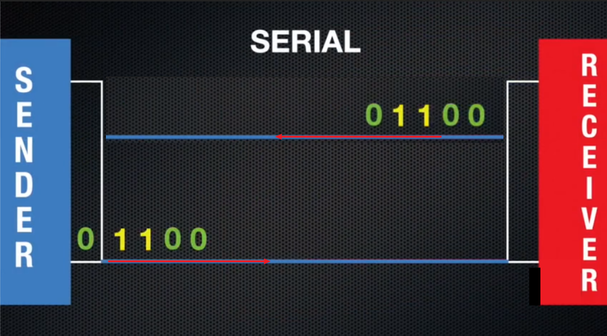
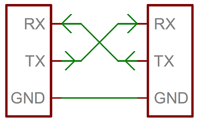

串口
串口基本概念
串口原理
串口通信的英文缩写是UART(Universal Asynchronous Receiver Transmitter) 全称是通用异步收发器。 听起来很高深的概念，其实就如下图，两个设备，一根线串起来，发送方在线的一头将数据转换为二进制序列，用高低电平按照顺序依次发送01信号，接收方在线的另一头读取这根信号线上的高低电平信号，对应转化为二进制的01序列。 异步收发指的就是全双工传输，即发送数据的同时也能够接收数据，两者同步进行，就如同我们的电话一样，我们说话的同时也可以听到对方的声音。
每当我们想要在PC和MCU之间或两个MCU之间进行通信时，最简单的方法就是使用UART。在两个UART之间传输数据只需要两根线。数据从发送UART的Tx引脚流向接收UART的Rx引脚。
{kind=link}

串口通信原理示意
波特率
波特率(bandrate)是指，每秒钟我们的串口通信所传输的bit个数，通俗的讲就是在一秒内能够发送多少个1和0的二进制数。比如，波特率是9600，就意味着1S中可以发送9600个0和1组成的二级制序列。
发送端 TX 与 接收端 RX
UART通信基本上使用2个引脚进行数据传输。Tx-用于发送数据的发送数据的引脚，Rx-用于获取数据的接收数据的引脚。两个串口进行通信的话， 最少需要三根线相连。
{kind=link}

RX 代表信息接收端，TX 代表信息发送端
注意
如果是连接些模块，模块并没有自主供电，还须连接VCC！
串口操作
下文通过掌控板与blue:bit蓝牙从机模块的串口通信，最终实现掌控板蓝牙的通讯功能。

blue:bit 蓝牙模块
构建UART
from mpython import * # 导入mpython所有对象
uart=UART(1,baudrate=9600,tx=Pin.P15,rx=Pin.P16) # 构建UART对象，设置波特率为9600，TX、RX 引脚分别为P15、P16
HC06(blue:bit 蓝牙从机模块)默认出厂的波特率为9600。所以我们在此处构建UART时，波特设为9600，后面才能通讯成功。请根据自己需要的连接串口的波特率自行设置。
UART(id, baudrate, bits, parity, stop, tx, rx, rts, cts, timeout) , id 为串口号，可设值为1~2.掌控板支持3组串口。0用于REPL。baudrate 参数
为波特率，tx 参数为映射发送引脚，rx 参数为映射接收引脚。所有引脚均可以作为串口的输入RX，除 P2、P3 、P4 、P10 只能作为输入，其余所有的引脚理论上都可以作为输出TX。 一般只需设置上述参数即可，其他参数会保持默认参数。如需了解更多UART的参数，请查阅 machine.UART 章节。
串口发送
你可以使用带蓝牙功能的电脑或手机下载蓝牙调试助手，配对蓝牙模块。这样就可以实现掌控板和电脑、手机的通讯。
蓝牙连接配对成功后，往串口发送字节数据:
>>> uart.write('hello,world!')
这时，用串口助手看下，是否接受到掌控板发过来的数据。uart.write(buf) 函数为向串口写入（发送）字节数据，返回数据的长度。
串口读取
掌控板接收串口数据，并将数据显示至OLED屏幕上:
from mpython import * # 导入mpython所有对象
uart=UART(1,baudrate=9600,tx=Pin.P15,rx=Pin.P16,timeout=200) # 实例UART，设置波特率9600，TX、RX映射引脚为P15、P16，超时设为200ms
while True:
if(uart.any()): # 当串口有可读数据时
data = uart.readline() # 从串口读取一行数据
print("received:",data) # 打印接收到的数据
print("接收:%s" %data.decode('utf-8')) # 注意需要将字节码解码为字符串
这时你可以通过串口助手向串口发送数据，当掌控板接收到串口数据后，打印并显示至OLED屏。在while循环中,轮询使用 uart.any() 判断串口中是否有可读数据，当有数据时，用
uart.readline() 读取一行数据。需要注意的是，串口接收到的是字节类型，如果是传至OLED显示，需要用 decode() 将字节转为字符串。
除了 UART.readline() 读取数据，还可以使用 UART.read(length) 从串口读取指定长度的数据。
拓展
学会了如何使用串口后，你就可以实现掌控板与其他MCU(Arduino)、电脑/手机、电子模块间的通讯。应用更为广泛，您可发挥你想象，如何用好串口，做出更有趣的东西！